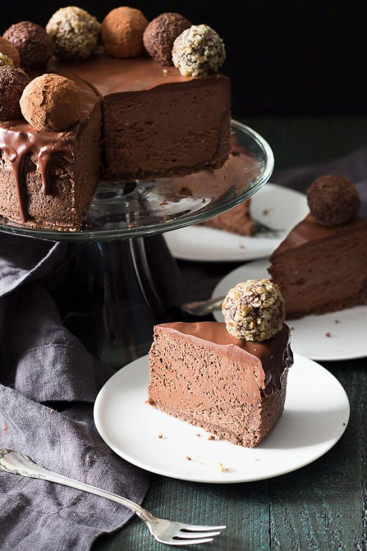

Chocolate Truffle Cheesecake
Serves: 12
Ingredients
Crust
- 1 cup almond flour
- 2 tbsp whey protein powder
- 2 tbsp unsweetened cocoa powder
- 2 tbsp low carb sugar powdered
- 3 tbsp butter, melted or more if needed
Cheesecake
- 16 ounces Philadelphia cream cheese (2 packages) softened
- 1/2 cup low-carb sugar powdered
- 3.5 oz Ghirardelli 86 % Dark Chocolate (any high % dark chocolate)
- 3 tbsp unsweetened cocoa powder
- 2 large eggs room temperature
- 1/2 tsp vanilla
- 1/2 tsp stevia glycerite
Chocolate Layer
- 1/4 cup Lily’s Sugar Free Chocolate (or more dark chocolate)
- 1/3 cup heavy cream
Instructions
Preparation
- Preheat the oven to 350 F and position the rack to the middle.
- Place the bottom of a 6″ spring-form cheesecake pan on a piece of parchment and trace it.
- Cut out the circle, ensuring it fits the bottom of the pan.
- Assemble the spring-form pan and brush the bottom and sides with melted butter.
- Add the parchment circle to the bottom of the pan.
Crust
- Measure the Sukrin 1 (or Swerve) into a coffee grinder and powder.
- Add the almond meal, cocoa powder, protein powder and sweetener to a medium bowl.
- Whisk together to combine and break up any lumps.
- Add the melted butter and blend with a fork.
- The mixture should hold firmly together when gently squeezed in your hand.
- If not, add a little more melted butter 1-2 teaspoons and mix.
- Press the crust firmly into the bottom of the cheesecake pan and partway up the sides.
- Dock (poke holes all over) the dough on the base and sides with a fork.
- Bake until the crust is fragrant and beginning to brown at the edges – about 10-15 minutes.
- Cool while preparing the cheesecake.
Chocolate Cheesecake
- Preheat oven to 350 degrees and position rack to the middle of the oven.
- Finely chop the chocolate and
- add it to a metal or ceramic bowl placed over barely simmering water, to melt completely.
- Measure the Sukrin 1 (or Swerve) into a coffee grinder and powder.
- Place the softened cream cheese in a medium bowl and mix at low-medium speed until creamy and free of lumps.
- Scrape down the bowl.
- Mix the powdered sweetener and cocoa powder together and add it to the cream cheese mixture, mixing on medium-low speed until fully incorporated.
- Scrape down the bowl.
- Add the eggs one at a time, mixing at low speed until completely incorporated and scraping the bowl after each addition.
- Add the vanilla and stevia glycerite and begin adding the chocolate while mixing, until well blended.
- Spoon the thick batter into the crust, pushing down with the spoon to make sure there are no air bubbles.
- Level the top ( I used a small offset spatula).
Bake In a Water Bath:
- Tear two large pieces of aluminum foil.
- Place the cheesecake in the middle of the foil and carefully fold the aluminum foil around it.
- This is the barrier between the water and the cheesecake pan, so take your time to wrap the pan completely and firmly.
- I soak my crust as often as not when I don’t take this step seriously. Guess what? The cheesecake is still good.
- Place the wrapped cheesecake into a larger pan.
- Place the pan on the oven rack and fill with hot water until it comes 1- 1 1/2 inches up the side of the cheesecake pan.
- Carefully slide the rack into position.
- Bake for 45 – 60 minutes or until the very center is just barely jiggly.
- The cheesecake is small, so it may skip that part all together!
- Remove from the oven, cover with a clean tea towel and let it cool in the water bath for 30 minutes before removing and cooling for another hour.
- Remove the aluminum foil, cover the top of the pan in cling wrap and refrigerate overnight.
Chocolate Topping and Decoration:
- Place the sugar free chocolate chips and heavy cream into a microwave safe bowl and microwave for 50 seconds (time will vary depending on your microwave.)
- Let sit for a few minutes and then gently whisk until the chocolate ganache is completely blended.
- Starting at the edge of the cheesecake, spoon the sugar free ganache onto the edge of the cake, encouraging it to drip down the side.
- Take your time repeating the procedure all the way around the cheesecake.
- Pour the rest of the ganache onto the middle of the cheesecake and spread evenly over the top with a small offset spatula.